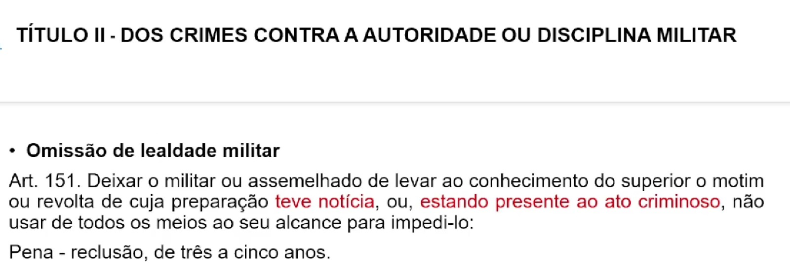

⚖ TÍTULO I - DA APLICAÇÃO DA LEI PENAL MILITAR (Art. 1º ao 28)
⚖ TÍTULO II - DO CRIME (Art. 29 ao 47)
⚖ TÍTULO III - DA IMPUTABILIDADE PENAL (Art. 48 ao 52)
⚖ TÍTULO IV - DO CONCURSO DE AGENTES (Art. 53 e 54)
⚖ TÍTULO V - DAS PENAS (Art. 55 ao 109)
⚖ TÍTULO VI - DAS MEDIDAS DE SEGURANÇA (Art. 110 e 120)
⚖ TÍTULO VII - DA AÇÃO PENAL (Art. 110 e 120)
⚖ TÍTULO VIII - DA EXTINÇÃO DA PUNIBILIDADE (Art. 123 e 135)
PARTE ESPECIAL - LIVRO I
DOS CRIMES MILITARES EM TEMPO DE PAZ
⚖ TÍTULO I - DOS CRIMES CONTRA A SEGURANÇA EXTERNA DO PAÍS (Art. 136 e 148)
TÍTULO II
DOS CRIMES CONTRA A AUTORIDADE OU DISCIPLINA MILITAR
CAPÍTULO I - DO MOTIM E DA REVOLTA (Art. 149 e 153)
🎥 30. Dos Crimes Militares em Tempos de Paz - Parte 2

Art. 149. Reunirem-se militares ou assemelhados:
I - agindo contra a ordem recebida de superior, ou negando-se a cumpri-la;
II - recusando obediência a superior, quando estejam agindo sem ordem ou praticando
violência;
III - assentindo em recusa conjunta de obediência, ou em resistência ou violência, em comum, contra superior;
IV - ocupando quartel, fortaleza, arsenal, fábrica ou estabelecimento militar, ou
dependência de qualquer dêles, hangar, aeródromo ou aeronave, navio ou viatura militar, ou
utilizando-se de qualquer daqueles locais ou meios de transporte, para ação militar, ou
prática de violência, em desobediência a ordem superior ou em detrimento da ordem ou da
disciplina militar:
Pena - reclusão, de quatro a oito anos, com aumento de um têrço para os cabeças.
Nota:
1) Reunião + desobediência
2) Crime plurissubjetivo (Concurso Necessário)
3) Crime propriamente militar
4) Crime Comissivo ou Omissivo
5) Pena com aumento de 1/3 para os cabeças
6) Não admitem a forma culposa
7) Em regra, admite a forma tentada
Parágrafo único. Se os agentes estavam armados:
Pena - reclusão, de oito a vinte anos, com aumento de um têrço para os cabeças.
Nota:
1) Reunião + desobediência
2) Crime plurissubjetivo (Concurso Necessário)
3) Crime propriamente militar
4) Crime Comissivo ou Omissivo
5) Pena com aumento de 1/3 para os cabeças
6) Não admitem a forma culposa
7) Em regra, admite a forma tentada

Art. 152. Concertarem-se militares ou assemelhados para a prática do crime previsto
no artigo 149:
Pena - reclusão, de três a cinco anos.
Parágrafo único. É isento de pena aquêle que, antes da execução do crime e quando
era ainda possível evitar-lhe as conseqüências, denuncia o ajuste de que participou.

Art. 151. Deixar o militar ou assemelhado de levar ao conhecimento do superior o motim
ou revolta de cuja preparação teve notícia, ou, estando presente ao ato criminoso, não usar
de todos os meios ao seu alcance para impedi-lo:
Pena - reclusão, de três a cinco anos.

CAPÍTULO II - DA ALICIAÇÃO E DO INCITAMENTO (Art. 154 e 156)
Art. 154. Aliciar militar ou assemelhado para a prática de qualquer dos crimes previstos
no capítulo anterior:
Pena - reclusão, de dois a quatro anos.
Nota: Só existe para o Crime de Motim e Revolta
Art. 155. Incitar à desobediência, à indisciplina ou à prática de crime militar:
Pena - reclusão, de dois a quatro anos.
Parágrafo único. Na mesma pena incorre quem introduz, afixa ou distribui, em lugar
sujeito à administração militar, impressos, manuscritos ou material mimeografado,
fotocopiado ou gravado, em que se contenha incitamento à prática dos atos previstos no
artigo.

Art. 151. Deixar o militar ou assemelhado de levar ao conhecimento do superior o motim
ou revolta de cuja preparação teve notícia, ou, estando presente ao ato criminoso, não usar
de todos os meios ao seu alcance para impedi-lo:
Pena - reclusão, de três a cinco anos.
CAPÍTULO V - DA INSUBORDINAÇÃO (Art. 163 e 166)
Art. 165. Promover a reunião de militares, ou nela tomar parte, para discussão de ato
de superior ou assunto atinente à disciplina militar:
Pena - detenção, de seis meses a um ano a quem promove a reunião; de dois a seis
meses a quem dela participa, se o fato não constitui crime mais grave